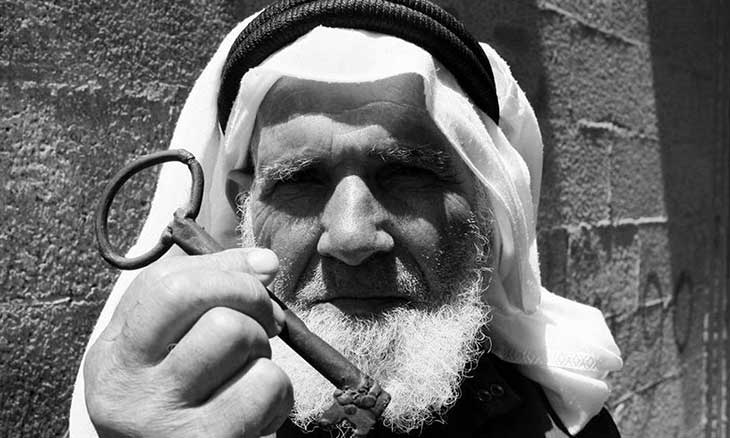

النكبة مصطلح فلسطيني يعبر عن المأساة الإنسانية المتعلقة بتشريد عدد كبير من الشعب الفلسطيني خارج دياره.
وهو الاسم الذي يطلقه الفلسطينيون على تهجيرهم وهدم معظم معالم مجتمعهم السياسية والاقتصادية والحضارية عام 1948.
وهي السنة التي طرد فيها الشعب الفلسطيني من بيته وأرضه وخسر وطنه، لصالح إقامة الكيان الصهيوني
بقي حوالي 150.000 فلسطيني، لم يتم تهجيرهم، داخل إسرائيل في عام 1948، .
وفرضت عليهم الجنسية الإسرائيلية، لكن إسرائيل طبقت عليهم حكما عسكريا على مدى عشرين عاما
ثم طبقت هذا الحكم العسكري لاحقا على فلسطينيي الضفة الغربية وقطاع غزة بعد احتلال عام 1967
